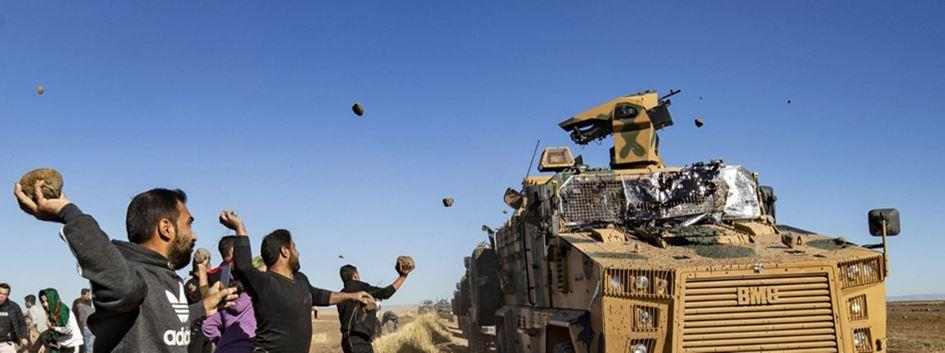
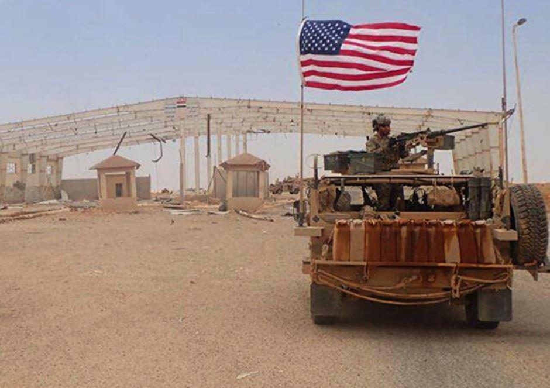

La Syrie est moins à la mode. Les médias en parlent peu désormais alors que l’importance géopolitique du sujet reste essentielle.
Les pays occidentaux se sont couverts de ridicule pendant des années, attendant avec avidité la chute de Bachar el-Assad et soutenant, faute de mieux, des islamistes dits « modérés ». On apprécie au passage ce délicieux oxymore.
La transformation de cette prétendue guerre civile en laboratoire du jihad international n’a pas fait dévier d’un iota les brillants stratèges américains, français ou anglais. La CIA et les services secrets européens ont continué à fournir des armes à d’improbables milices, tandis que le Qatar et l’Arabie Saoudite arrosaient de dollars tous les chefs de guerre susceptibles d’aider à l’instauration d’une république islamiste sunnite.
L’émergence de Daech a changé la donne. Son occupation d’une bonne partie de la Syrie et de l’Irak a permis aux Etats-Unis d’intervenir directement par les airs et indirectement au sol par le biais des milices kurdes. D’autre part, conscient d’un proche effondrement de l’armée syrienne, la Russie a lancé sa première opération extérieure d’envergure depuis longtemps et, en tout cas, la toute première au Proche-Orient.
La Turquie, sous prétexte de contenir les Kurdes, s’est invitée elle-aussi et si l’on ajoute les Iraniens et les Libanais du Hezbollah, on peut dire que la Syrie détient le triste record du monde de soldats étrangers sur son sol, certains invités, d’autres non.
Les positions des uns et des autres n’ont que peu varié ces derniers mois mais ce ne sera pas toujours le cas et c’est donc le moment d’évaluer la situation.
Les grands vainqueurs de cette terrible guerre, même si elle n’est pas terminée, sont évidemment les Russes. Leur intervention militaire fut remarquablement maîtrisée, tant sur le plan humain que technologique et l’occident qui avait prédit leur enlisement en est pour ses frais. Sur le plan géopolitique, les bénéfices sont considérables. La Russie s’est implantée durablement dans un pays stratégique, a sécurisé Tartous, son unique base navale en Méditerranée et surtout est revenue brillamment dans le concert des grandes nations du monde. Elle a également prouvé qu’elle ne laissait pas tomber ses alliés ce qui constitue un contraste intéressant avec certains.
Mais de nombreux obstacles se dressent sur sa route. Le premier est turc. Erdogan qui voyait avec inquiétude une autonomie kurde s’organiser dans le nord de la Syrie est brutalement intervenu repoussant les FDS (principale milice kurde) au sud et à l’est. Les Américains ont laissé leur allié subir une lourde défaite et ce sont les Russes qui ont dû contraindre Erdogan à s’arrêter.
L’armée turque est également présente dans la province d’Idleb, au nord-ouest, devenue un chaudron islamiste peu banal. Les milices islamistes à la solde d’Ankara cohabitent difficilement avec d’autres milices islamistes livrées à elles-mêmes, en tête desquelles trône l’ex-Front al-Nosra devenu Hayat Tahrir al-Cham, et sa cohorte d’étrangers venus du monde entier (il y a même des Ouïghours). Les Russes ont toléré cela mais ont tout de même aidé l’armée syrienne à récupérer une partie du territoire au sud et à l’ouest début 2020. Cette opération victorieuse a permis à Alep de se libérer des incessantes attaques d’artillerie qu’elle subissait et la réouverture de l’autoroute Damas-Alep, nœud stratégique du pays.
Les relations turco-russes sont complexes, comme vient encore de le montrer l’affaire du Haut-Karabagh. Rivaux, parfois ennemis mais capables de conclure des accords très pragmatiques comme en Libye, Russes et Turcs s’observent en frôlant l’affrontement. Toutefois, malgré sa puissance militaire, il ne semble pas que la Turquie puisse vraiment menacer la prééminence russe en Syrie. Le jour où Poutine décidera de reprendre Idleb, il y a fort à parier qu’Erdogan devra plier bagages.
Ce ne sera pas le cas avec les Américains. S’ils ont lâché les Kurdes dans le nord, ils occupent avec eux l’est de la Syrie, au-delà de l’Euphrate. Le pétrole syrien est ainsi confisqué. Cette occupation, faite au mépris complet du droit international, permet aux Américains de surveiller notamment les mouvements des gardiens de la révolution iraniens, très présents au sud-est, le long de la frontière irakienne. Pour compléter son dispositif, l’armée américaine a construit une base dans le désert, au sud, près de la frontière jordanienne. Appelée al-Tanf, cette base est également faite pour surveiller les mouvements iraniens. Elle abrite accessoirement d’anciens miliciens islamistes passés à la solde des Américains, mais cela ne semble déranger personne aux États-Unis.
Cette occupation-là sera difficile à éliminer.
Les Kurdes quant à eux semblent assurés d’une protection américaine plus fiable que dans le nord en raison de la présence du pétrole. Mais on voit mal comment leur présence peut durer dans une zone qui devient exclusivement arabe au fur et à mesure que l’on descend dans le sud où aucune population kurde n’a jamais vécu. Les incidents sont nombreux. L’occupation kurde est, comme d’habitude, brutale et des attentats sont régulièrement organisés contre les FDS. Et contrairement à ce qui est souvent dit, ce ne sont pas nécessairement des islamistes qui les perpétuent.
Côté syrien, c’est évidemment l’Iran qui joue le rôle le plus important après la Russie. Dès le début de la guerre, des milliers d’Iraniens sont venus aider l’armée syrienne minée par les désertions de ses éléments sunnites. Leur aide a été décisive dans certaines batailles et leurs pertes importantes. De nombreux chiites venus d’Afghanistan sont également présents en Syrie. Le but de l’Iran est bien connu : éviter d’abord que la Syrie ne tombe aux mains des sunnites (ce qui est maintenant acquis) puis renforcer l’axe chiite est-ouest, c’est-à-dire Iran-Syrie-sud du Liban. La religion alaouite des dirigeants syriens est honnie par les sunnites, d’où leur rapprochement pragmatique avec le voisin chiite.
C’est bien sur ordre de l’Iran que le Hezbollah libanais est intervenu en Syrie contre les islamistes sunnites. Aguerris et motivés, les combattants du Hezbollah ont été particulièrement efficaces, chassant notamment Daech des montagnes de l’Anti-Liban. Ils ont participé à toutes les batailles décisives de la guerre, notamment à Alep et dans la Ghoutta (banlieue de Damas).
L’Iran aimerait naturellement tirer les bénéfices de cet investissement qui fut décisif avant l’intervention russe. C’est d’ailleurs le général Soleimani (tué depuis sur ordre de Donald Trump) qui, en août 2015, s’était rendu à Moscou pour convaincre Vladimir Poutine d’intervenir d’urgence. Elle cherche donc à mettre une emprise forte sur la Syrie, ce qui contrarie parfois la Russie. Israël aussi d’ailleurs qui, pour des raisons bien connues, n’accepte pas la présence de militaires iraniens à sa porte. C’est pour cela que de très nombreux raids aériens sont lancés contre les installations logistiques iraniennes dans toute la Syrie. Israël a clairement soutenu les islamistes durant cette guerre, soignant par exemple de très nombreux combattants dans ses hôpitaux. Il n’y a rien d’étonnant à cela : tout régime arabe fort étant un danger potentiel, son affaiblissement, comme en Syrie, ou sa destruction, comme en Irak, sont tout bénéfice. C’est la stratégie du chaos qui a fait ses preuves.
Quant à Daech, ses perspectives sont nulles dorénavant. Certes, de nombreuses cellules dormantes peuvent être réactivées à travers le pays et plusieurs bandes sont encore actives dans le désert, entre Palmyre et Homs d’un côté et Palmyre et Deir ez-Zor de l’autre. Les pertes de l’armée syrienne sont régulières et la configuration du terrain fait que cette guérilla peut se prolonger encore longtemps, d’autant que les éléments étrangers qui se battent encore ne se rendront jamais. Mais c’est une gêne, en aucun cas une réelle menace.
En dépit de tous ces obstacles, c’est donc bien la Russie qui a le plus de cartes en main. Mais si elle a parfaitement réussi à inverser le cours de la guerre, elle est maintenant confrontée à une difficulté de taille : la reconstruction de la Syrie. L’Amérique a récemment renforcé ses sanctions qui n’auront d’autres effets que d’appauvrir un peu plus la population syrienne. Il y a donc un pays que les sanctions américaines n’effraient pas et qui pourrait jouer ce rôle, c’est la Chine. La France pourrait encore jouer ce rôle, entraînant d’autres pays européens derrière elle. Mais pour cela, il faudrait qu’elle retrouve une vertu un peu démodée, le courage.
Partager cette page